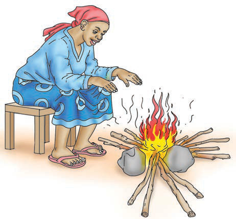
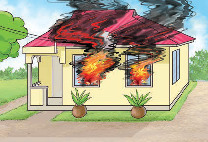
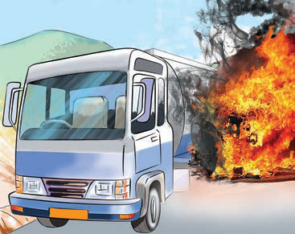

Disadvantages of combustion
The combustion can lead to various disadvantages as follows:
- (a)Fire can cause significant environmental damage, such as destroying vegetation and animal habitats.
- (b)Forest burning can cause soil erosion and loss of soil fertility;
- (c)Fire can destroy buildings, causing significant property loss as shown in Figure 4.

